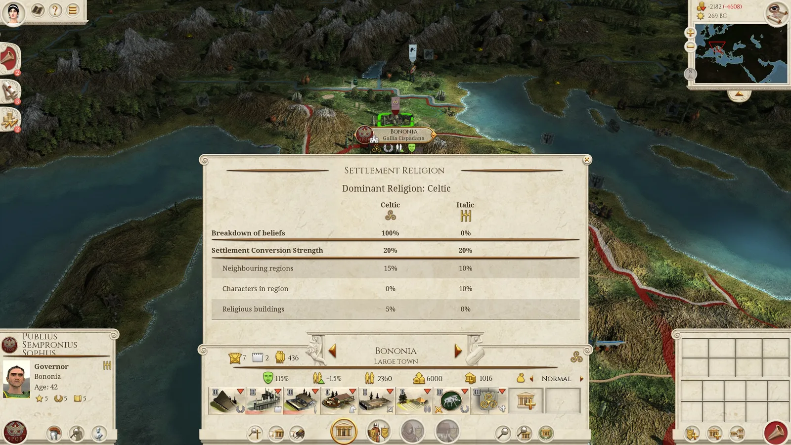
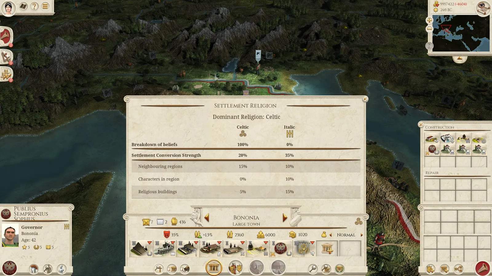
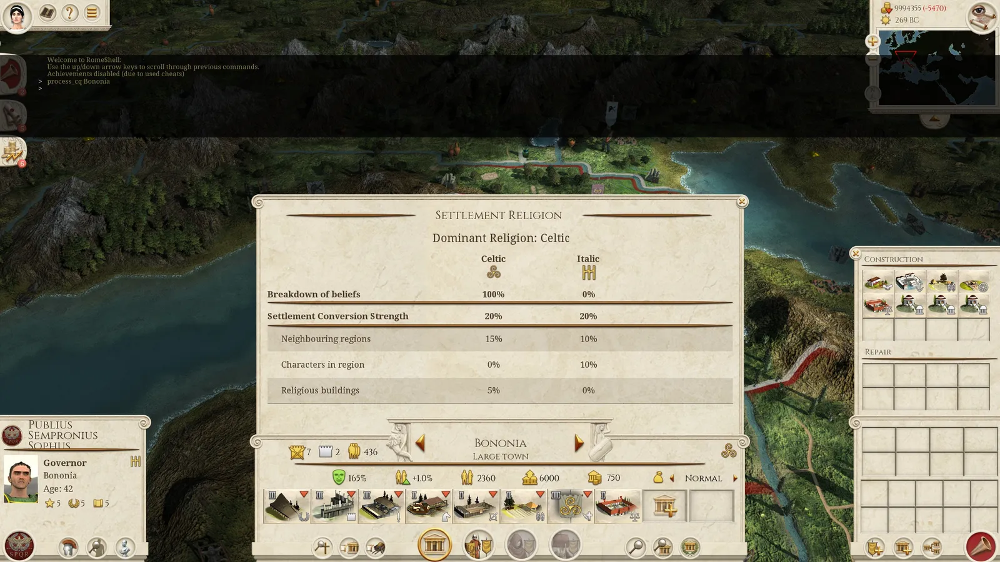
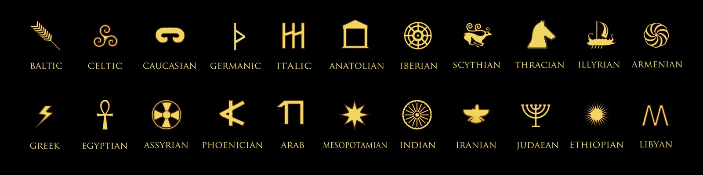
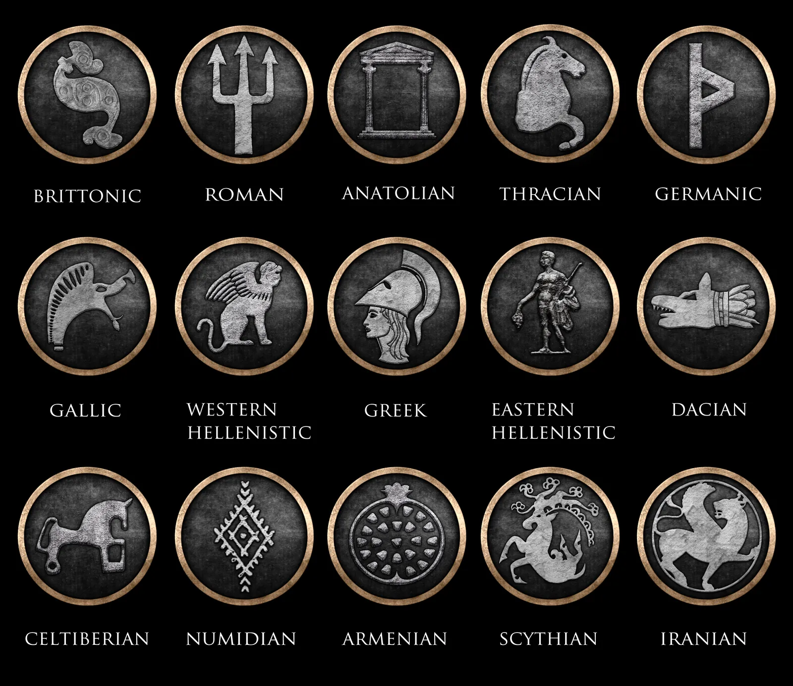
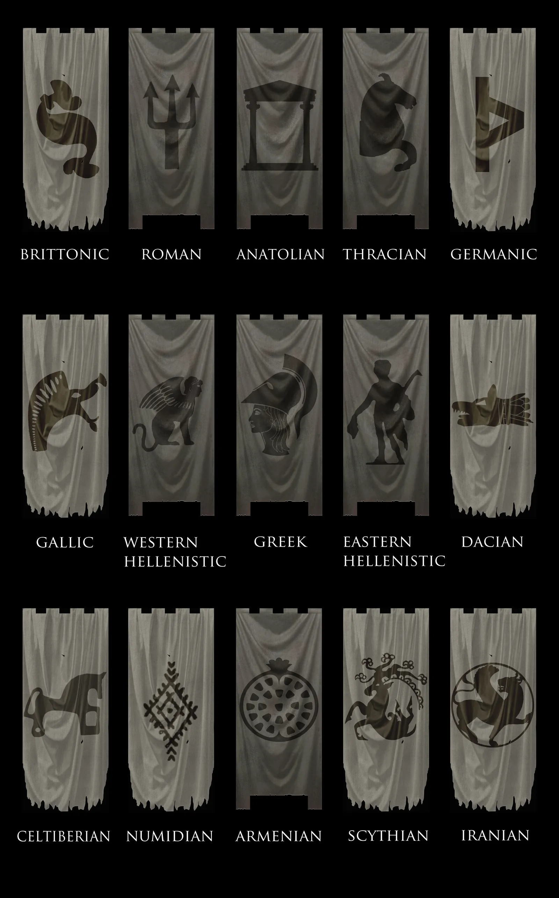
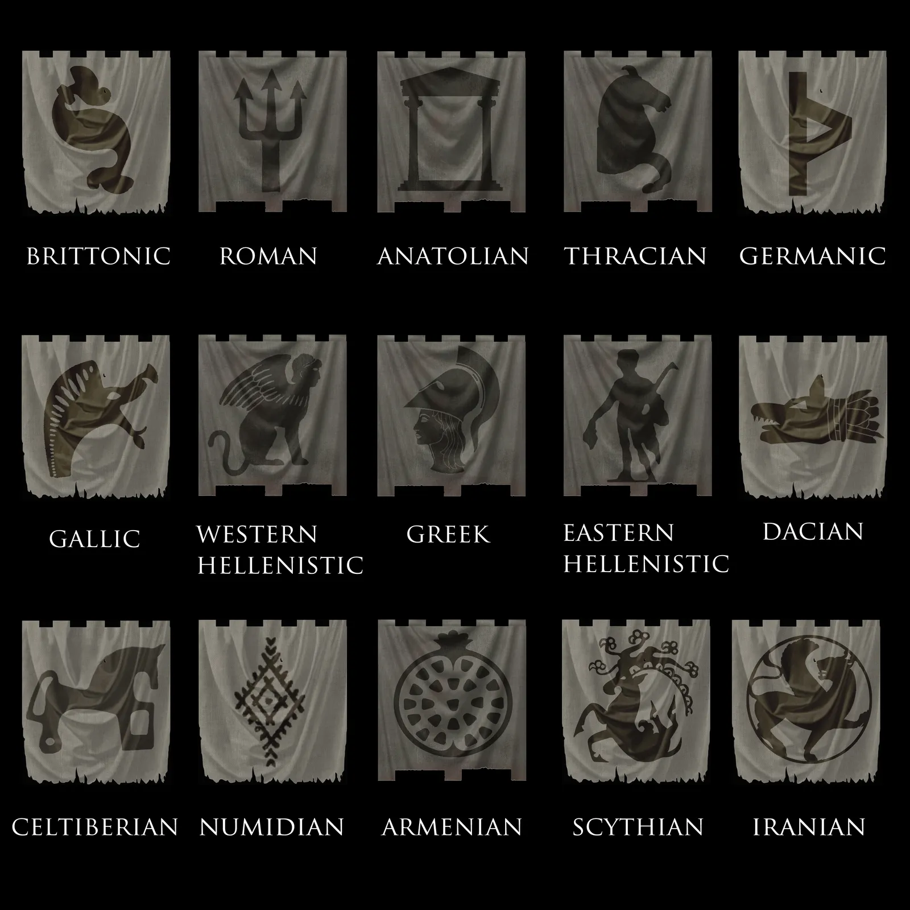

RTR: Imperium Surrectum
RTR: Imperium SurrectumCultures and new features in 0.4
2022-02-26 · Tarnholm
Hello and welcome to yet another Developer Diary. Today we are going to talk a little bit about a a few new features we are adding to RIS 0.4.
There are now 16 cultures defining the regions and factions on our map! These are more visual in nature and you’ll be able to determine the culture based on the banners and symbols we’ve posted. Cultures determine portraits, music, voices, rebel banners and a lot of internal coding but also give a small culture penalty.
Also there are now 22 'religions' representing all of the major cultures of our map. Religion is the BI mechanic that affects public order, even though it represents cultures, it's easier to distinguish it from the culture mechanism by calling it religion. Religions greatly impact how happy your populace is depending on how your faction lines up with the conquered region. Religion will be represented in Native Culture buildings that are set before the campaign and cannot be destroyed, annexation buildings that help convert regions to your religion, and traits for your generals and governors.
So how will it work?
For example, as Rome when you conquer Asculum, you should have no issues with the population. However, when you conquer Bononia, there will be some serious public order issues if you want to recruit your Roman units straight away, without first integrating the settlement into your faction.

There will always be a Celtic presence in Bononia, due to the native culture building, and if you do not build your annexation building, the population should be manageable enough. However as you expand you might need Bononia to supply troops, because if you don't ever recruit from there the town will keep growing without anything preventing it from becoming a huge city, and then you have over population and squalor issues! However, if you do decide to build an Annexation building, the populace will hate you, and hate you even more if they didn't like you already. In time though once converted the population will go green again, it just takes time and patience.

So what can you do? Well, we have added a new building, called Martial Law. It's an experimental building, and we are eager to hear feedback on it! With Martial Law you can quell any unrest but at a steep local and small factional economic price. Once built, annexation cannot be built and vice versa. So use it wisely. Maybe you need to use it so you can send a garrison later for when you decide to build annexation, maybe you need to regroup and can't afford to have it revolt after a Pyrrhic Victory. The choice is yours! However, do not keep it built for long, as the economy will slowly drain. At some point you will have to decide on letting the city grow under it's native religion, or annex it to your religion to build troops.

One thing to note is, once you conquer a settlement, you cannot build your annexation building until the previously built one is destroyed! This represents the transition from a foreign system of government to the establishment of a law and order that is your own.
We are excited to have this diversity and immersive mechanic in the game that no other mod has done before; with that though comes a lot of unknowns, so all the feedback we can get will help us improve the mod with each and every version! Enjoy conquering and managing your lands!
Our graphic artists and historians have also been hard at work crafting some new symbols for the different religions.

They also created new banners and symbols for the rebel faction so that each area has a look that represent the local culture.



That is it for this time. We know many of you are waiting for the release of RIS 0.4 and so are we! There are a few minor issues that we still need to fix before we can release it to the community but it is very nearly done. 🙂